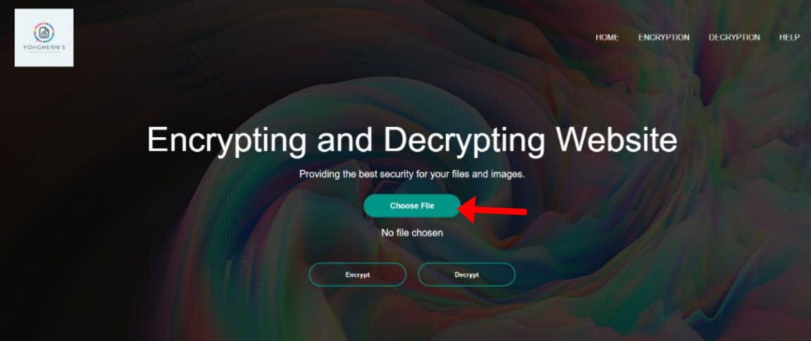
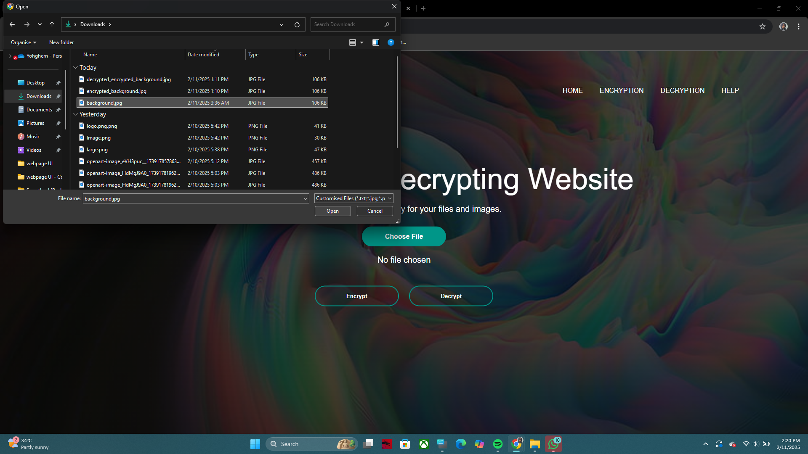
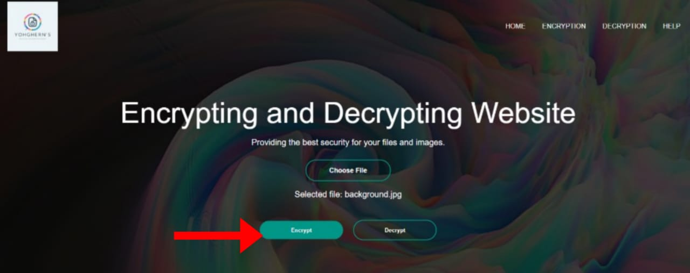
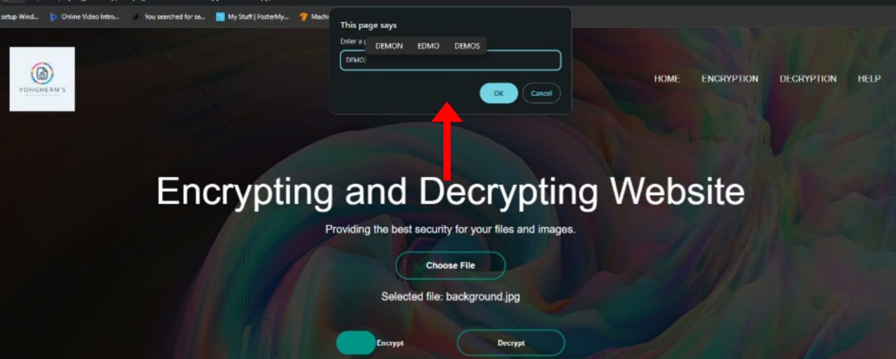
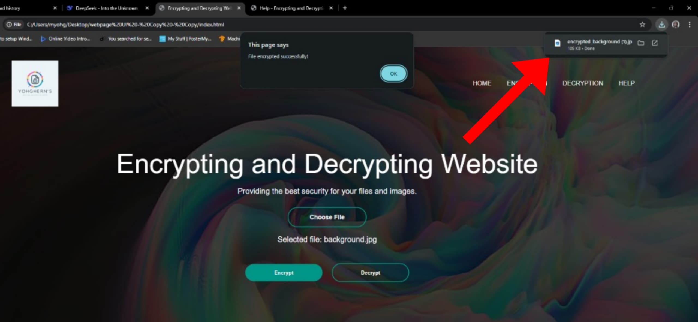
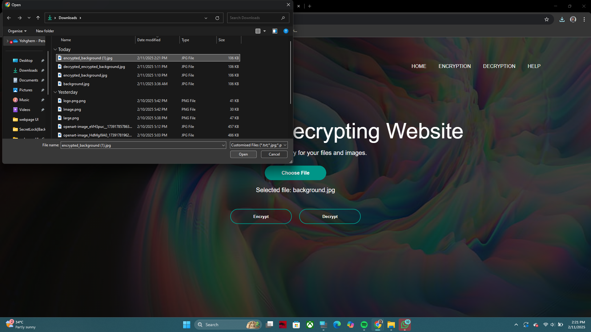
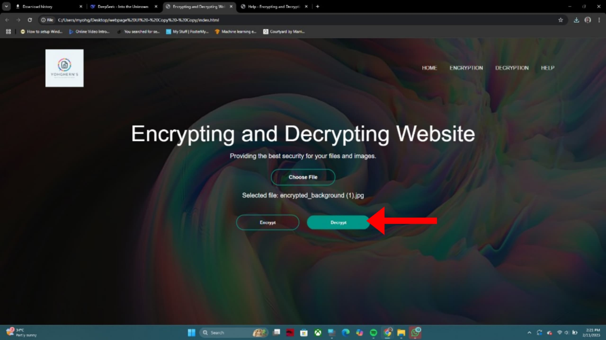
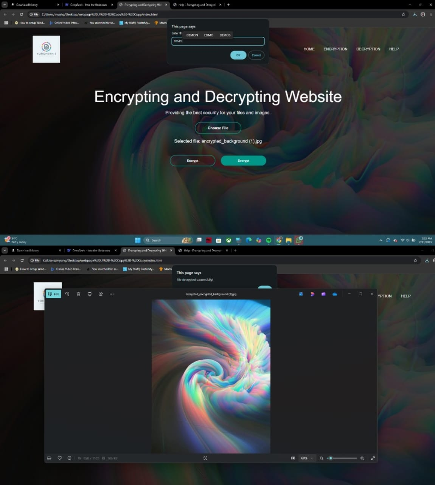

How to Use This Website
Welcome to the Encrypting and Decrypting Website! This guide will walk you through the process of encrypting and decrypting your files step by step. Follow the instructions below to ensure a smooth experience.
Step 1: Uploading a File
-
Click the "Choose File" button:
On the homepage, you'll see a button labeled "Choose File". Click this button to select the file you want to encrypt or decrypt.
 -
Select your file:
A file dialog will open. Navigate to the file you want to encrypt or decrypt, select it, and click "Open". The name of the selected file will appear next to the "Choose File" button.

Step 2: Encrypting a File
-
Click the "Encrypt" button:
After selecting your file, click the "Encrypt" button to begin the encryption process.
 -
Enter a password:
You will be prompted to enter a password. This password will be used to encrypt your file. Make sure to choose a strong password and remember it, as you will need it to decrypt the file later.
 -
Download the encrypted file:
Once the encryption process is complete, your browser will automatically download the encrypted file. The file will be named
encrypted_<original_filename>.
Step 3: Decrypting a File
-
Click the "Choose File" button:
To decrypt a file, start by clicking the "Choose File" button and selecting the encrypted file you want to decrypt.
 -
Click the "Decrypt" button:
After selecting the encrypted file, click the "Decrypt" button to begin the decryption process.
 -
Enter the password:
You will be prompted to enter the password you used to encrypt the file. Make sure to enter the correct password, as the decryption process will fail if the password is incorrect.
 -
Download the decrypted file:
Once the decryption process is complete, your browser will automatically download the decrypted file. The file will be named
decrypted_<original_filename>.
Tips for Success
- Choose a strong password: Use a combination of uppercase and lowercase letters, numbers, and special characters to create a strong password.
- Remember your password: If you forget your password, you will not be able to decrypt your file. There is no way to recover a lost password.
- Test the process: Before encrypting important files, try the process with a test file to ensure you understand how it works.
Need Further Assistance?
If you encounter any issues or have questions, feel free to contact us through the support options provided on the website. We're here to help!